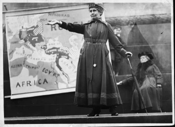
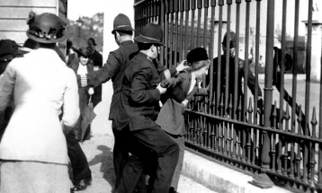

Les Suffragettes
Le mouvement qui changea tout
Les suffragettes est un film réalise par Sarah Gavron, reprenant l’histoire des suffragettes, un mouvement féministe réclamant le droit de vote au Royaume-Uni dans les années 1910. Les militantes de ce mouvement menèrent leurs combats d’une main de fer, prêtes à tout pour parvenir à leurs fins.
Mise en place
Nous sommes en 1900 et suivons l’histoire de Maud, une ouvrière, mariée et mère de famille. On y découvre son quotidien difficile, qui doit s’occuper de son enfant et travailler à la blanchisserie d’arrache-pied pour essayer de survivre dans cette société impitoyable envers les femmes.
La rencontre
En sortant de la blanchisserie un soir pour faire une livraison, elle assistera dans une rue à du vandalisme par des femmes jetant des pierres sur une vitrine de magasin, avec comme slogan « Le droit de vote pour les femmes ». Elle apprendra le lendemain à la blanchisserie par la bouche d’une de ses collèges ayant participé au vandalisme que ce mouvement de désobéissance civile nommé « Les suffragettes » a été ordonné et crée par Emmeline Pankhurst.
"Nous cassons des vitres, nous brûlons des choses parce que la guerre est le seul langage que les hommes écoutent. Parce que vous nous avez battues et trahies et il ne reste plus rien d'autre."
La fuite
Dans la semaine suivant l’acte de vandalisme, elle subira des attouchements sexuels de la part de son patron de blanchisserie, qu’elle repoussera en lui mettant le fer à repasser brûlant sur la main avant de s’enfuir en courant.
Le début de la fin
Le but, voter
Maud décide finalement de rejoindre sa collègue dans le mouvement des « suffragettes », pour lutter pour le droit de vote des femmes même si cela veut dire être dans l’illégalité et risquer de perdre son enfant et sa famille. Maud comprendra très vite le fonctionnement des « suffragettes », manifestant pour leurs droits. Que ce soit bombe dans les boîtes aux lettres des dirigeants politique, acide pour en effacer tout le contenu, ou bien encore les actes de vandalisme multiples autant sur des figures politiques que sur des magasins, tous les coups sont permis si le message passe.
"Tu veux que je respecte la loi, rend la loi respectable. Maud"
La déclaration
Emily Pankhurst, la leadeuse de ce mouvement répétera souvent que pendant trop longtemps les femmes ont été ignorées à cause de leurs manifestations pacifiques et que pendant trop longtemps elles ont souffert à cause des hommes qui avaient leur destin entre leurs mains. Emily scande donc que ce temps est révolu et que les femmes devraient avoir désormais droit de se battre pour leurs droits et qu’il est juste qu’elles fassent tout leur possible pour les obtenir, quitte à être dans l’illégalité la plus totale.
Ce qu'il faut retenir
Comme cité précédemment le film est une retranscription d’un évènement qui a bel et bien eu lieu en Angleterre et en dehors des frontières jusqu’aux Etats-Unis. Ce combat dura 15 ans, 15 ans de lutte acharnée, de sang versé lors des manifestations, de familles déchirées, tout ça pour que les femmes soient enfin devenues éligibles au vote à partir de 30 ans en 1918. Cependant, le film ne se repose pas que sur le combat du droit de vote pour les femmes. C’est la femme qui est mise au centre du combat car elle réclame de meilleures conditions de travail et de vie dans la société. Ce combat par ailleurs est toujours d’actualité à notre époque, là où les femmes hésitent entre vie personnelle et familiale et carrière professionnelle qui est souvent incompatible à cause d’un enfant, d’une famille à gérer. Le chemin est alors encore long et compliqué pour toutes ces femmes au quotidien périlleux, qui se posent encore la question « comment vais-je faire demain ? ».